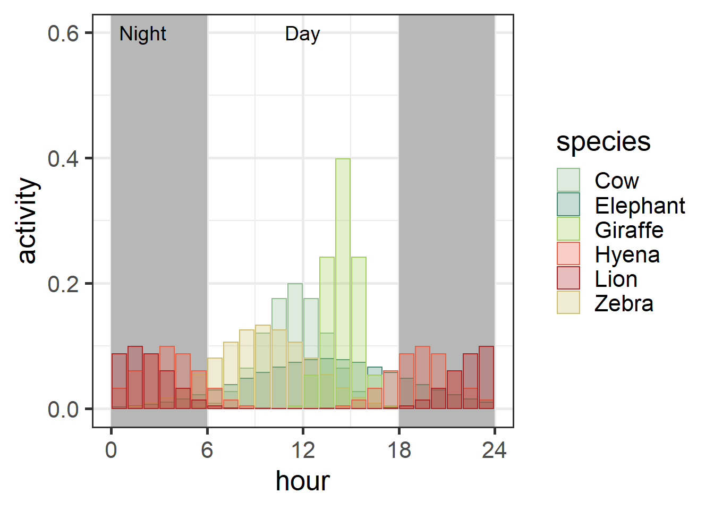

Plots and Code
Time Intervals
Patterns that occur over a 24-hour time frame can be tricky to communicate effectively, especially when major transitions in those trends happen at night. There are several different ways to represent time in R; here’s just a couple of potential solutions.
Circular Plots
# simulate data
# activity for 6 species, 24 hours
data = data.frame(hour = rep(seq(1,24),6),
species = rep(c("Cow","Elephant","Zebra","Giraffe","Hyena","Lion"), each=24))
# activity a function of time
data$activity = c(dnorm(data$hour[which(data$species=="Cow")], mean=12, sd=2),
dnorm(data$hour[which(data$species=="Elephant")], mean=14, sd=5),
dnorm(data$hour[which(data$species=="Zebra")], mean=10, sd=3),
dnorm(data$hour[which(data$species=="Giraffe")], mean=15, sd=1),
(dnorm(data$hour[which(data$species=="Hyena")], mean=4, sd=2)+
dnorm(data$hour[which(data$species=="Hyena")], mean=20, sd=2))/2,
(dnorm(data$hour[which(data$species=="Lion")], mean=2, sd=2)+
dnorm(data$hour[which(data$species=="Lion")], mean=24, sd=2))/2)
# activity is a probability in this case, but it could also be a count etc.
head(data)## hour species activity
## 1 1 Cow 5.384880e-08
## 2 2 Cow 7.433598e-07
## 3 3 Cow 7.991871e-06
## 4 4 Cow 6.691511e-05
## 5 5 Cow 4.363413e-04
## 6 6 Cow 2.215924e-03Now let’s plot these data using ggplot2:
ggplot(data, aes(x=hour, y=activity))+
geom_bar(aes(fill=species, color=species), stat="identity", alpha=0.5) +
theme_bw(base_size=20)+
coord_polar()
Interesting! So here, we can see some variation in animal activity. However, it’s a little challenging to compare, say carnivores and herbivores. Let’s play with some of the aesthetics:
# I usually define colors that I want using the color picker option:
levels(as.factor(data$species))## [1] "Cow" "Elephant" "Giraffe" "Hyena" "Lion" "Zebra"# go to Addins > Colour Picker and choose based on the levels. I like to return color names
animalcols = c("darkseagreen", "aquamarine4", "darkolivegreen3", "tomato2", "firebrick", "lightgoldenrod3")
circ_plot = ggplot(data, aes(x=hour, y=activity))+
geom_rect(aes(xmin=0,xmax=6,ymin=-Inf,ymax=Inf),fill="gray70",alpha=0.1)+
geom_rect(aes(xmin=18,xmax=24,ymin=-Inf,ymax=Inf),fill="gray70",alpha=0.1)+
geom_col(aes(fill=species, color=species),position=position_nudge(-0.5),alpha=0.3,width=1) +
theme_bw(base_size=20)+
scale_fill_manual(values=animalcols)+
scale_color_manual(values=animalcols)+
scale_x_continuous(breaks=c(0,6,12,18))+
theme(axis.text.x=element_text(vjust=1))+
annotate(geom="text", x=c(0,12), y=c(0.3,0.3), label=c("Night","Day"), size=5)+
coord_polar(theta="x", clip="off")
circ_plotIf desired, you can also explore faceting by species:
ggplot(data, aes(x=hour, y=activity))+
geom_rect(aes(xmin=0,xmax=6,ymin=-Inf,ymax=Inf),fill="gray70",alpha=0.1)+
geom_rect(aes(xmin=18,xmax=24,ymin=-Inf,ymax=Inf),fill="gray70",alpha=0.1)+
geom_col(aes(fill=species, color=species),position=position_nudge(-0.5),alpha=0.3,width=1) +
theme_bw(base_size=20)+
scale_fill_manual(values=animalcols)+
scale_color_manual(values=animalcols)+
scale_x_continuous(breaks=c(0,6,12,18))+
theme(axis.text.x=element_text(vjust=1))+
coord_polar(theta="x", clip="off")+
facet_wrap(~species) Unfortunately, free x and y scales are not supported for circular plots, so data transformation might be necessary to see these effectively.
Non-circular Options
Another option is to stack the data:
ggplot(data, aes(x=hour, y=activity))+
geom_rect(aes(xmin=0,xmax=6,ymin=-Inf,ymax=Inf),fill="gray70",alpha=0.1)+
geom_rect(aes(xmin=18,xmax=24,ymin=-Inf,ymax=Inf),fill="gray70",alpha=0.1)+
geom_col(aes(fill=species, color=species), alpha=0.5) +
theme_bw(base_size=20)+
scale_fill_manual(values=animalcols)+
scale_color_manual(values=animalcols)+
coord_cartesian(xlim=c(0,24))+
scale_x_continuous(breaks=c(0,6,12,18,24))+
annotate(geom="text", x=c(2,12), y=c(0.6,0.6), label=c("Night","Day"), size=5)# overlapping
ggplot(data, aes(x=hour, y=activity))+
geom_rect(aes(xmin=0,xmax=6,ymin=-Inf,ymax=Inf),fill="gray70",alpha=0.1)+
geom_rect(aes(xmin=18,xmax=24,ymin=-Inf,ymax=Inf),fill="gray70",alpha=0.1)+
geom_col(aes(fill=species, color=species), position=position_nudge(-0.5),alpha=0.3) +
theme_bw(base_size=20)+
scale_fill_manual(values=animalcols)+
scale_color_manual(values=animalcols)+
coord_cartesian(xlim=c(0,24))+
scale_x_continuous(breaks=c(0,6,12,18,24))+
annotate(geom="text", x=c(2,12), y=c(0.6,0.6), label=c("Night","Day"), size=5)